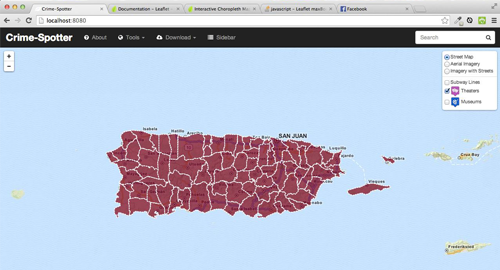
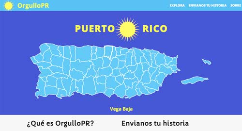
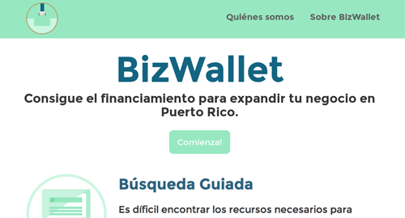

Proyectos Ciudadanos
Web Ciudadana

Esta aplicación desarrollada por la Legislatura Municipal pretende lograr una participación ciudadana más efectiva.
CrimeSpotter
Apoyada por la Policía de Puerto Rico, permite ver en un mapa la actividad criminal en nuestra isla.
Basta Ya

Es un movimiento de país contra la violencia y la agresividad enfocada en soluciones permanentes. Nuestra misión es transformar la conducta y hábitos de la sociedad civil y el sector público promoviendo la prevención y el esclarecimiento de los crímenes
Orgullo PR
Es un proyecto para resaltar lo bueno de todo Puerto Rico. La diferencia es que aqui TU eres el que nos dice que es el Orgullo de Puerto Rico.
Code After Hours
Esta es una organización que busca lograr que todos los jóvenes en Puerto Rico tengan la oportunidad de aprender programación para el 2016.
BizWallet
Es un app que ayuda a empresarios existentes o nuevos a conseguir los fondos que necesitan para su exito empresarial.